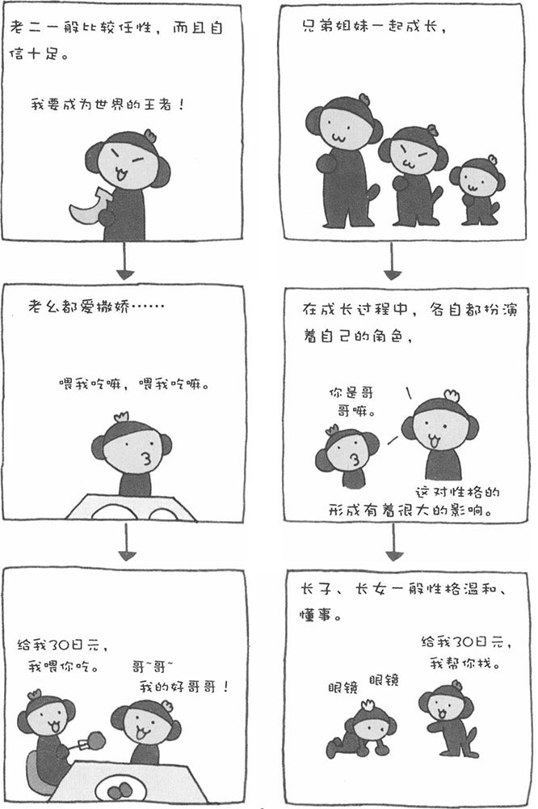

发展心理学，是研究人在成长过程中各个阶段的心理和行为的心理学。它主要以儿童的成长过程为研究对象，同时还研究从成年到老年的各个阶段的心理和行为。例如，从认知方面来看，要研究人从什么时候开始产生数字概念；从感情方面来看，要研究亲子关系、爱情关系对人的成长会产生什么样的影响。
■ 人本应在妈妈的肚子里多发育一段时间
马和山羊等动物，一出生就能站立起来；小袋鼠出生后，也是自己爬到妈妈的育儿袋里的。然而，婴儿出生后，不但不能站立，就连眼睛、耳朵等很多器官都还未发育成熟。很多学者认为，婴儿在出生后的一年时间里会迅速发育成长起来，但这一年本来应该是在母亲的子宫里度过的。瑞士生物学家波特曼将这种现象称为"生理性早产"。其中的原因可能是，人类最重要的器官"脑"在母体里得到了充分的发展，而为此付出的代价就是手、足等其他器官发育的滞后。
■ 老幺都爱撒娇
兄弟姐妹按照出生的顺序，性格有一定的倾向性。父母初次养育孩子时，由于缺乏经验，难免出现一些问题，这使长子、长女养成了能忍耐、懂事的性格。老幺是父母最小的孩子。首先，父母已经有了养育孩子的丰富经验，其次又会对最小的孩子疼爱有加。因此，老幺往往都比较任性、爱撒娇。此外，老幺多爱挑肥拣瘦，这也是由父母过度疼爱造成的。
